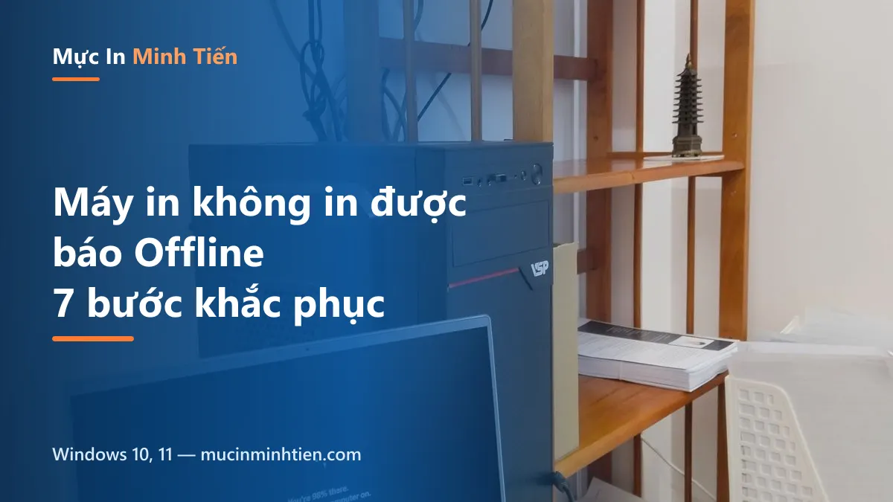
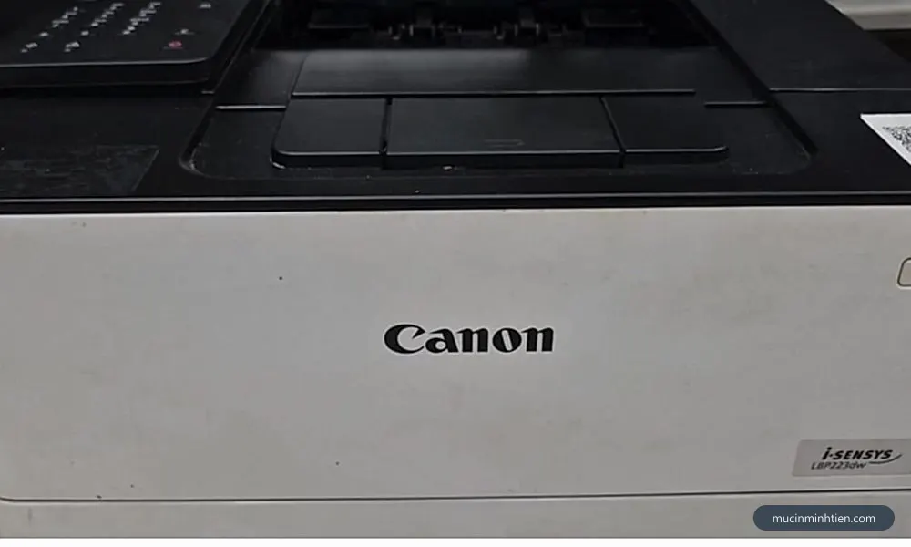
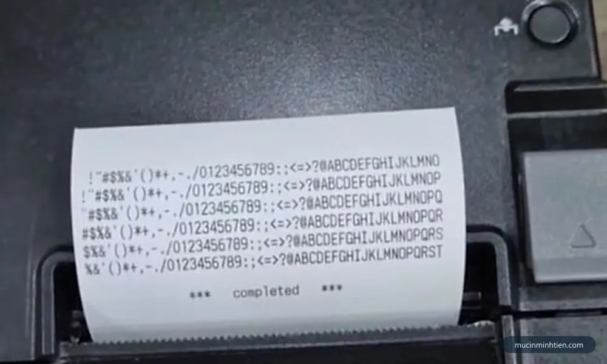
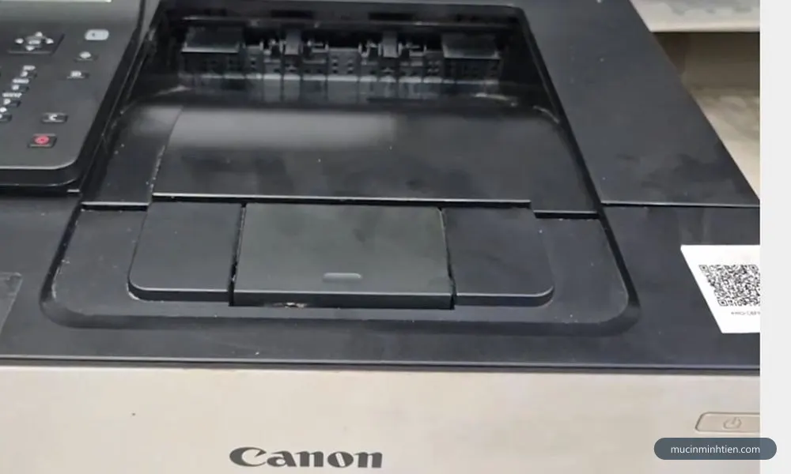
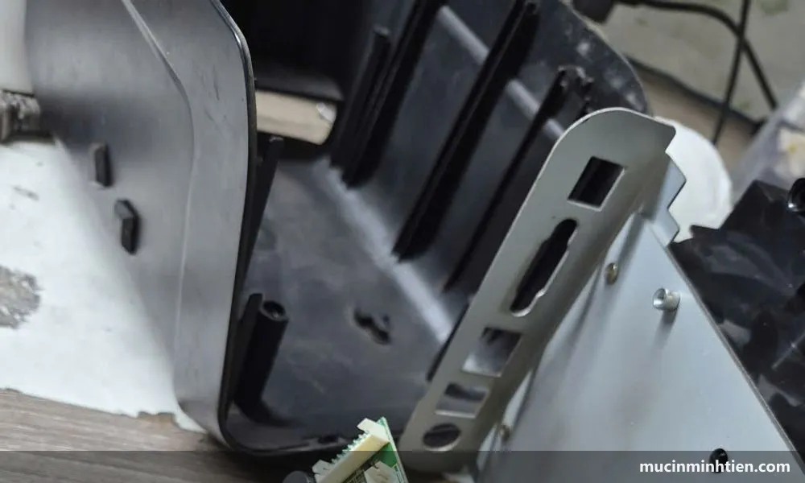
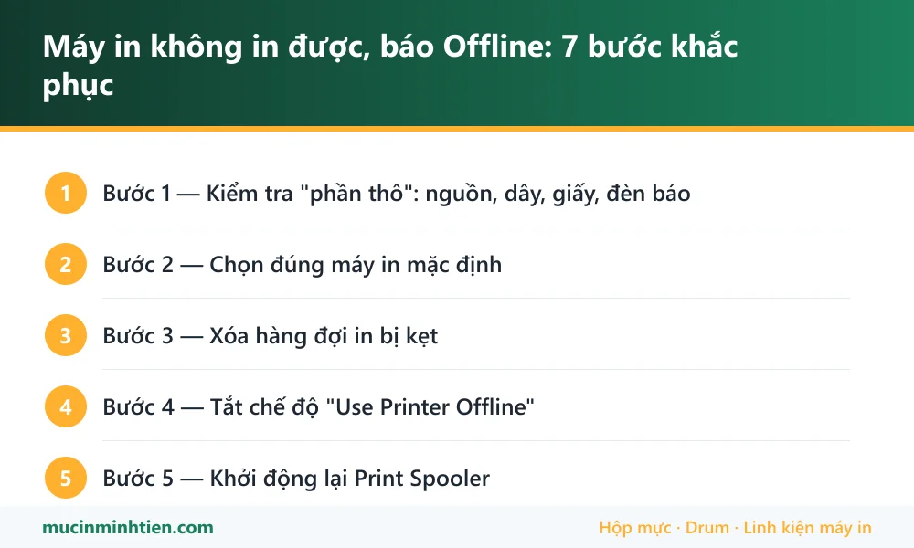

Máy in không in được, báo Offline: 7 bước khắc phục

Bấm in, máy tính báo "đã gửi" nhưng máy in im re — hoặc tên máy in hiện chữ Offline xám ngắt. Lỗi này 90% nằm ở phần mềm/kết nối chứ không phải máy hỏng. Làm đúng thứ tự 7 bước sau, đa số trường hợp khỏi ngay từ bước 3-4.
Bước 1 — Kiểm tra "phần thô": nguồn, dây, giấy, đèn báo
- Máy in đang bật nguồn, đèn sáng ổn định (không nháy lỗi)?
- Dây USB cắm chắc 2 đầu — đổi cổng USB khác trên máy tính; dây mạng/WiFi còn kết nối?
- Còn giấy trong khay, nắp máy đóng khít, không kẹt giấy, mực chưa cạn?
Đèn máy in đang nháy lỗi thì xử lý lỗi đó trước (kẹt giấy, hết mực…) — máy đang lỗi sẽ không nhận thêm lệnh nào.

Bước 2 — Chọn đúng máy in mặc định
Rất hay gặp ở máy tính từng cài nhiều máy in: lệnh gửi vào máy in "ảo" (Microsoft Print to PDF, máy in cũ đã gỡ). Settings → Bluetooth & devices → Printers & scanners → chọn đúng máy in đang dùng → Set as default. Tắt luôn tùy chọn "Let Windows manage my default printer" để Windows khỏi tự đổi.
Bước 3 — Xóa hàng đợi in bị kẹt
- Bấm vào máy in → Open print queue.
- Menu Printer → Cancel All Documents — một lệnh cũ lỗi có thể chặn cả hàng dài phía sau.

Bước 4 — Tắt chế độ "Use Printer Offline"
Trong cửa sổ hàng đợi in, mở menu Printer: nếu dòng Use Printer Offline đang có dấu tick — bỏ tick. Đây chính là thủ phạm của thông báo "Printer Offline" trong rất nhiều ca, đôi khi Windows tự bật sau một lần in thất bại.
Bước 5 — Khởi động lại Print Spooler
- Windows + R → gõ
services.msc→ Enter. - Tìm Print Spooler → chuột phải → Restart.
- In thử lại. Spooler treo là bệnh kinh niên của Windows — bước này cứu được phần lớn ca "gửi lệnh mà không in".

Bước 6 — Máy in mạng/WiFi: kiểm tra IP
Máy in WiFi sau khi đổi router hoặc mất điện thường nhận IP mới, trong khi Windows vẫn gửi lệnh về IP cũ → Offline vĩnh viễn. In trang cấu hình mạng từ máy in (giữ nút WiFi/Go vài giây tùy dòng) để xem IP hiện tại, rồi gỡ máy in ra thêm lại theo IP mới — hoặc đơn giản nhất: chạy lại trình cài driver của hãng, nó tự tìm máy. Chi tiết xem bài cách cài đặt máy in USB, WiFi, mạng LAN.
Bước 7 — Gỡ và cài lại driver

- Settings → Printers & scanners → chọn máy in → Remove.
- Tải driver mới nhất đúng model từ trang chủ hãng, cài lại từ đầu.
- Với máy HP hay bị treo lệnh lặp lại, xem thêm bài cách reset máy in HP.
